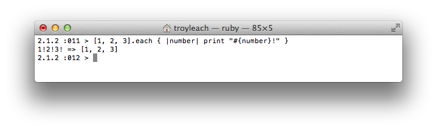
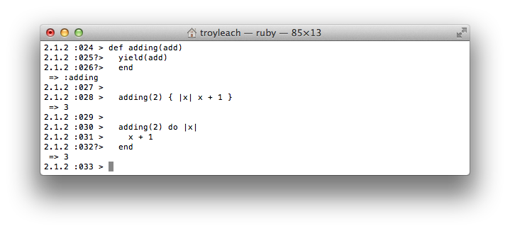
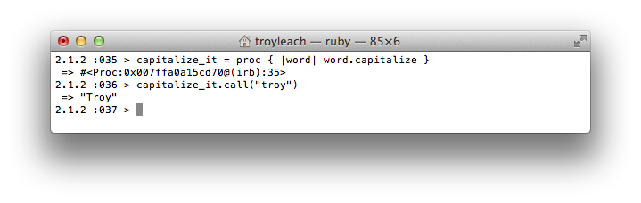
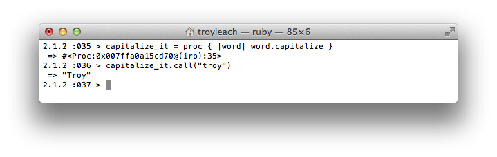
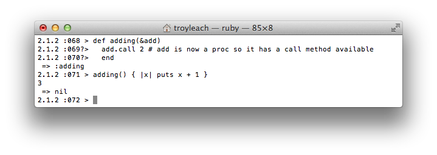
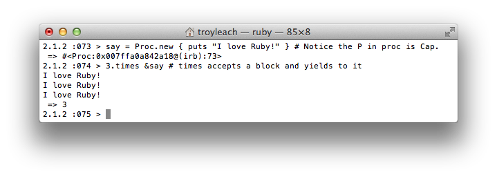
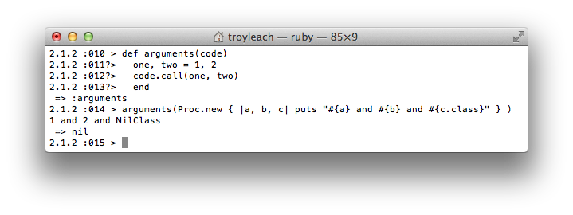
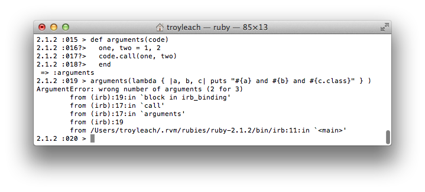

Ruby closures: Blocs, Procs and Lambdas
September 12, 2014
Blocks, Procs and lambdas, referred to as closures, are one of the most powerful aspects of Ruby!
What is a....
Block
Blocks are "chunks of code" that you can drop into another method as input. Sometimes they are called "anonymous functions" (or anonymous methods, Ruby really doesn't have functions) because they have no name but act like methods. You don't find blocks without some method like#each using them. Blocks are used all over the place. Sometimes coders don't even know they are using blocks. Every time a coder uses the word 'do' they are creating a block.
A block is a piece of code that is declared but not run in the place it's written. The idea is to leave it up to the receiver of the block to decide when to call it. -- Wolfram Arnold
- stashing away some code to be run later
- call backs
- initializers
- separating the body of a loop from the loop itself
- iterators
- running some extra code before and/or after (like the testing we have been doing)
- making our code look COOL!!
One would declare a block using do ... end or using squiggly braces { }. I don't think there is really a convention, or preferred method. I preferred using the squiggly braces because to me it makes my code look better (cooler). One article that I read the writer was pretty adamant about NOT using squiggly braces because they look to much like a hash.

is the EXACT same as

The default Block
Unnamed, anonymous, invisible, MAGIC.....
Every method no matter the number of parameters, could get an optional magic block parameter. This is called the default block and the method can call it usingyield.

In this example, adding yields 2 to the block, which results in 2 + 1 == 3
Proc (Procedures)
One can not store a block in a variable. So we can turn the block into a Proc and store the Proc in a variable.
 A Proc can take parameters too

A Proc can take parameters too

The &operator
This operator works differently depending on what it is applied to. This can be confusing for us new Ruby developers. How this operator is applied to our application today:Leading an explicit block parameter with
&block will convert the block to a Proc as shown below,

Leading an Proc argument with & will convert the Proc to a block.

lambdas
Lambdas are more strict than Proc's. the differences between a lambda and a Proc are:
- lambdas are more strict with regard to argument checking (
#arity, the number of parameters.) - lambdas can return a value with the return keyword
Proc
lambda
